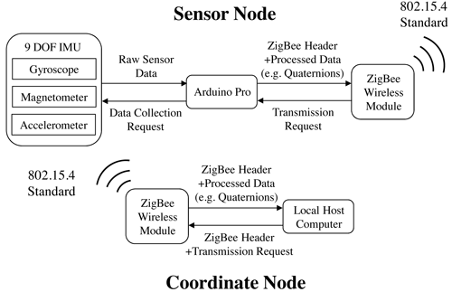

Development of Wireless Joint Angle Sensor
Motivation and Approach
In the NMAS, human motion capture plays an important role in kinematic analysis, and human joint kinematics is of great interest for abnormal walking detection. A 9-DOF inertial measurement unit (IMU) sensor was employed and programmed with an Arduino microprocessor based on direct cosine matrix (DCM) algorithm [1] and a time-varying complementary filter (TVCF) [2]. ZigBee technology was utilized to enable wireless communication between IMU sensor node and the local computer. A user interface was developed to provide visual feedback to patients [1].

Structure of the wireless joint angle sensor
Main Results
Three prototyped sensor nodes have been manufactured and they have been used for both upper-extremity and lower-extremity human motion capture and analysis. The wireless IMU sensor could provide accurate three-dimensional human joint angle estimation in real-time. The sensor could be con gured to work at either wireless mode (up to 30Hz via ZigBee) [1] or wired mode (100Hz via serial port) [2] for di fferent applications.
Experimental results for human motion capture
Recent Key Publications
- J. Bae, K. Haninger, D. Wai, X. Garcia and M. Tomizuka, "A Network-Based Monitoring System for Rehabilitation," in Proceedings of IEEE/ASME International Conference on Advanced Intelligent Mechatronics (AIM), pp. 232-237, 2012.
- K. Kanjanapas, Y. Wang, W. Zhang, L. Whittingham, and M. Tomizuka, "A Human Motion Capture System based on Inertial Sensing and A Complementary Filter," in Proceedings of the Sixth ASME Dynamic Systems and Control Conference (DSCC), 2013.